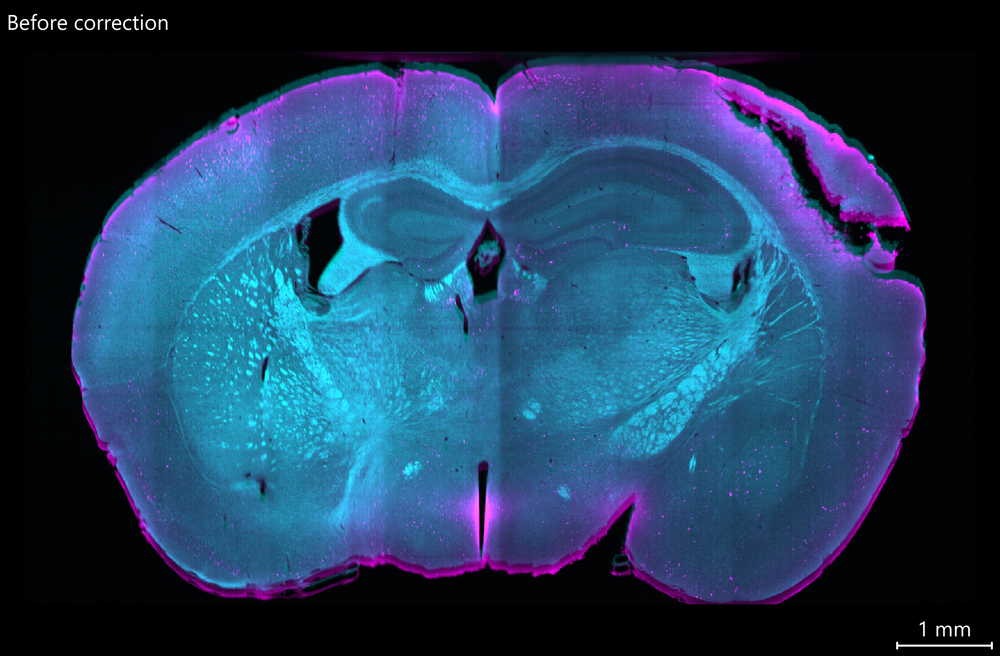
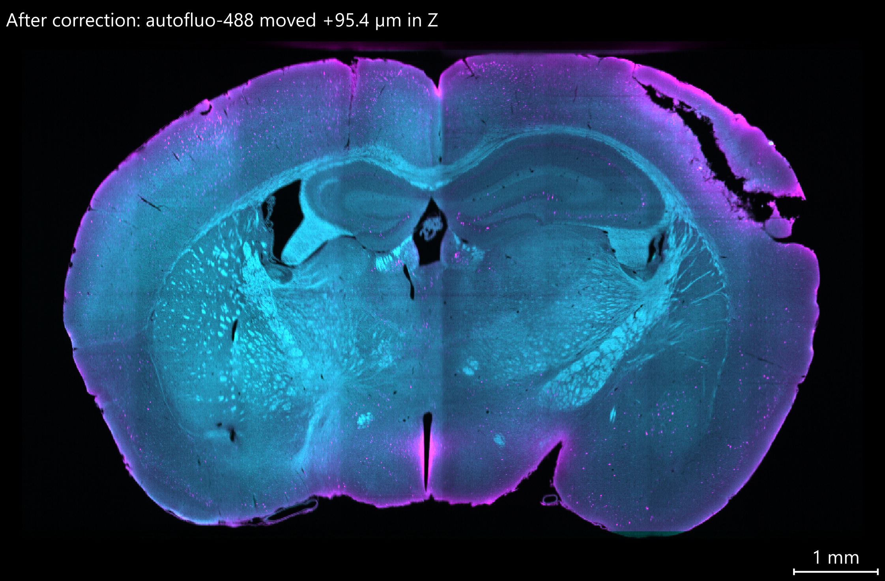

Chromatic shift correction
On a light-sheet microscope the channels of one stack are often offset from each other along Z. The detection focal planes of different wavelengths do not coincide, and the offset changes every time the system is realigned, so a bead calibration from another day does not apply. PyMIF therefore measures the offset on the sample itself and writes a corrected copy of the OME-Zarr dataset.
The correction works on any OME-Zarr image opened with ZarrManager (for example the output of pymif convert or of a mosaic fusion) and writes a new OME-Zarr image. Only a Z translation per channel is corrected.


XZ section of a cleared mouse brain, autofluorescence in cyan and cFos in magenta (the reference channel), shown at pyramid level 2 (12 µm planes). Before the correction the autofluorescence sits above the cFos signal: a cyan rim shows on top of the brain and a magenta rim below it. The estimate moved the autofluorescence channel by +95.4 µm, about 32 planes at full resolution (3 µm). 29 of the 32 crops were used, and the lower and upper surfaces agreed to within 2 µm.
Quick start
import json
from pathlib import Path
import pymif.microscope_manager as mm
z = mm.ZarrManager("brain.ome.zarr")
# 1. Measure: one correction per channel, in the Z unit (usually micrometer)
report = z.estimate_chromatic_shift(reference_channel=0)
print(report["shifts"]) # e.g. [0.0, 104.4]
print(report["warnings"]) # [] when the estimate is trustworthy
Path("chromatic_shift.json").write_text(json.dumps(report, indent=2))
# 2. Correct: a new store with the same structure as the input
out = z.apply_chromatic_shift("brain_corrected.ome.zarr", report)
# Or both steps in one call
out = z.correct_chromatic_shift("brain_corrected.ome.zarr", reference_channel=0)
A shift is the displacement applied to that channel: positive values move its content towards higher Z indices. The reference channel always gets 0. Shifts can also be given by hand, z.apply_chromatic_shift(out, [0.0, 104.4]), for example when they were measured on another dataset of the same session.
Command line
The same steps are available as pymif chromatic-shift, for scripts and pipelines:
pymif chromatic-shift -i brain.ome.zarr -z brain_corrected.ome.zarr -r chromatic_shift.json
pymif chromatic-shift -i brain.ome.zarr -r chromatic_shift.json # only measure
pymif chromatic-shift -i other.ome.zarr -z other_corrected.ome.zarr -sf chromatic_shift.json
Add --fail_on_warning in a pipeline: when the report has warnings, the command exits with an error and writes only the report. Every option, and the --batch CSV columns, are in Command line.
How the shift is measured
The sample’s lower and upper surfaces (its boundary along Z) are the one structure every channel shows, through background and autofluorescence, even when the channels label completely different things. The estimate uses only those surfaces. Lateral edges are ignored: their profile is the same at every Z, so they carry no information about an axial offset.
It runs in two stages, a coarse one on the whole sample and a fine one on small crops.
1. Coarse level, whole sample
The coarsest pyramid level that still has at least 16 Z planes and 32 pixels in Y and X is read for every channel (or
coarse_level).A sample mask is made from the average of the channels, each rescaled to 0–1 first: Gaussian smoothing, Otsu threshold (or
threshold), largest object, holes filled.Only surface voxels whose normal points mostly along Z are kept (
min_z_normal, default 0.7). Places where the sample is cut by the end of the stack are not surfaces and are left out.The Z-derivative of every channel is compared with that of the reference channel around those surfaces (normalized cross-correlation) at every whole-plane offset up to
max_shift. The derivative places the edge at a peak and removes brightness and background differences between channels. A parabola through the best offset and its neighbours gives a sub-plane result.
2. Finer level, local crops
Up to
n_regions(default 32) points are picked on the surface, spread over the sample in Y/X and split between the lower and the upper surface.Around each point, a crop is read from
refine_level(default 0, full resolution):crop_yxpixels wide and a few planes high. The crop of each channel is pre-shifted by the coarse result, so only the remaining error is searched, over about one coarse plane.Each crop gives a correlation curve. The curves of all crops whose peak reaches
min_correlationare summed, and the peak of the sum (again refined with a parabola) is the final shift. Summing is more robust than a median of per-crop results: a weak crop adds a little signal instead of an outlier vote.
Balancing the crops between the two surfaces matters. A channel whose edge is more blurred (different PSF, scattering) appears shifted one way on the lower surface and the other way on the upper surface, so the two biases cancel in the sum. The report shows each surface separately so you can see how large that effect is.
For example, with level 0 at 2 µm and a pyramid that halves Z at every level, the coarse step runs on level 2 (8 µm planes) and gets the shift to within a few micrometers. The fine step then searches ±12 µm around it on level 0 and returns the shift to a fraction of a plane.
Estimate options
Option |
Default |
Meaning |
|---|---|---|
|
|
channel that stays in place |
|
|
timepoint used for the estimate (all timepoints get the same shift) |
|
10% of the stack depth |
largest shift searched, in the Z unit. A wide range is cheap: only the coarse level is affected |
|
auto |
level for the mask and the coarse step |
|
|
level the crops are read from; |
|
|
number of crops |
|
|
crop width in Y and X, in pixels of |
|
|
how flat a surface must be to count as Z-facing ( |
|
|
crops whose correlation peak is lower are left out |
|
Otsu |
mask threshold on the averaged, 0–1 rescaled coarse image |
The report
estimate_chromatic_shift() returns a JSON-serializable dict:
Key |
Content |
|---|---|
|
final correction per channel, in |
|
result and correlation peak of the coarse step |
|
crops that passed |
|
median per-crop shift on the |
|
robust standard deviation of the per-crop shifts around their surface median |
|
every crop: channel, position, surface, shift, correlation, whether it was used |
|
problems found during the estimate (see below); empty when all went well |
|
the settings that were used |
The corrected dataset
apply_chromatic_shift() writes a new store and returns it opened as a ZarrManager. The output has the structure of the input: every array keeps its chunks, shards, compression and dimension names, and every group keeps its attributes (pixel sizes, channel names, colours and display windows). Only the Z size changes.
Option |
Values |
Meaning |
|---|---|---|
|
|
grow Z so no channel loses data; keep the input size (data shifted out of the stack is lost); or crop to the planes every channel covers |
|
|
linear interpolation; or round each shift to whole planes, which leaves voxel values untouched |
|
|
also shift image subgroups that have the same channels |
|
|
also write labels; they follow the reference channel and are only padded or cropped |
|
as for |
The added or removed planes are rounded to whole planes of the coarsest level, so every pyramid level stays aligned (each level is shifted directly, keeping the input’s own downsampling). Planes added below the data move the image origin; PyMIF does not write translations in the NGFF metadata, so the output’s root attribute pymif_chromatic_shift records it instead, together with what was applied:
out.root.attrs["pymif_chromatic_shift"]
# {'shifts': [0.0, 104.4], 'unit': 'micrometer', 'extent': 'union', 'order': 1,
# 'z_offset': 0.0, # where input plane 0 now sits, in micrometer
# 'estimate': {...}} # summary of the report, when one was passed
The output path must differ from the input. Call apply_chromatic_shift() before in-memory edits such as subset_dataset(): it copies the on-disk settings of each array and refuses datasets that no longer match them.
Checking the result
warningsis empty. A warning that the search limit was reached means the real shift is larger thanmax_shift: increase it. A warning that the refined shift sits at the edge of its window means the coarse step went wrong.n_regions_usedis close ton_regionsandspreadis a fraction of a plane.surface_shifts: lower and upper agree to within a plane or so. A larger gap means the channels’ edges differ in shape, not just in position; the final shift is still their balanced average.The residual is near zero: running
out.estimate_chromatic_shift()on the corrected store should return shifts close to0.
Troubleshooting
Symptom |
Cause and fix |
|---|---|
|
the sample fills the whole stack in Z, so it has no lower or upper surface in the data. Measure the shift on another dataset of the same session and pass it to |
search-limit warning |
the shift is larger than |
few crops used, low correlation |
a channel with very little tissue contrast. Lower |
the coarse level is large |
with pyramids that also downsample Z, the automatic coarse level can be a few hundred MB per channel; pass a coarser |